|
Japanese | azarashi |  | |
| English | seal | |||
| Sem Classes | <animal> |
|
Malay | anjing laut | | |
| English | seal | |||
| Sem Classes | <animal> | |||
|
Malay | tera | | |
| English | seal | |||
| Sem Classes | <stationary> |
|
Japanese | azarashi | | |
| Malay | anjing laut | |||
| English | seal | |||
| Sem Classes | <animal> |
We propose a simple method to make a dictionary using intermediate means, taking advantage of accessible resources such as English-to-X dictionaries and X-to-English dictionaries. Also, we focus on how we can improve the existing method to generate Korean-to-Japanese dictionary automatically. Since Korean and Japanese share Chinese characters for the majority of words, we use them as well. We argue that this "multi-pivot criterion" is useful to build dictionaries especially for the languages using Chinese characters such as Vietnamese and so on.
In this paper, we propose a method for using two bilingual dictionaries to make a third dictionary. As the number of people who use computers for collecting information from all aronnd the world increases, the demand for dictionaries with many other language combination including a native language does also grow. It is very difficult to find bilingual dictionaries between minor languages, or freely accessible resources even between major languages. However, it is relatively easy to find dictionaries to-or-from English. In order to translate between two lesser known languages, X and Y, we look up a dictionary of X-to-EngIish, then look up a dictionary of a EngIish-to-Y. That is, we use English as a pivot,
There is a growing body of research on the generation of dictionaries automatically. It is common to generate a third dictionary using English as a pivot. In this paper, we focus on how we can improve the existing method to generate a Korean-to-Japanese dictionary automatically. We call our method "multi-pivot alignment": in addition to using English as a pivot, we will also use Chinese characters (hanzi). We are able to do this as Korean and Japanese share much vocabulary using equivalent Chinese characters. We will refer to Chinese characters in general as hanzi (the Chinese word for them), Japanese Chinese characters as kanji, the Japanese word, and Korean Chinese characters as hanja, the Korean word. These are all different pronunciations or the same hanzi, written as
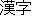
and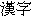
in Japanese and Korean respectively.Below we give an example of using both English and hanzi to build up a Korean-to-Japanese dictionary.
| ||||||||||||||||||||||||||||||||||||
Korean nak'in "brand" means "identification mark on skin, made by burning". English brand, however, has another meaning: "trademark"; it is ambiguous. Therefore, if only English is used as a pivot, we create a spurious link to Japanese shouhyou "brand". By also comparing the Chinese characters, we are able to select the correct translation, as both nak'in "brand" and rakuin "brand" have the same hanzi:
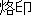
. This we have one, correct, entry in our Korean-Japanese lexicon: () ().We did a small pilot study of words in a Korean-Japanese lexicon and found 58% Sino-Korean, 32% native Korean, 7.5% foreign-origin and 2.5% mixed multi-word expressions (one word native, one word Sino-Korean). Of the Sino-Korean words 80% had equivalent hanzi to the Japanese kanji (48% of the total number of words). The upper limit of matching using these two pivots will thus be 48%.
When automatically creating lexical resources, we believe it is possible and necessary to exploit any similarities between the source and target languages. Here we are using Chinese characters, but other language pairs can use other similarities. For example, to generate a French-to-Eng:lish dictionary, it is effective to use the number of common contiguous matching characters, since the two languages share many common words (such as aberration, abolition, alliance, ... ). Even with slight difference8, rough matches can be made between cognates, using, for example, the Longest Common Subsequence Ratio to match fantastic (E) with fantastique (F) (Melamed, 2001, p.15).
In the next section we give some background on Chinese characters, previous research on automatically building bilingual lexicons and the importance of open-source resources. We then present the resources we used and our method of alignment (3), and discuss our results (4).
Chinese characters have been used in four east Asian languages: Chinese, Korean, Japanese and Vietnamese (although they are no longer used in Vietnam). The characters vary slightly from country to country, because they have been modified to express vernacular situations appropriately and the meaning of characters has been diversified in the process of using them.
Korean has two kinds of writing. The phonetic script, called hangul was invented by King Sejong (1397-1450). It used to be used along with Chinese characters (hanja). However hanja are no longer in general use in Korea. A typical newspaper will be mainly hangul, with hanja only used parenthetically to identify proper-names or ambiguous words.
According to Sohn (1999, p.13), contemporary Korean vocabulary is composed of three parts: native Korean (35%), Sino-Korean (60%), and western loan words (5%), which is compatible with our results of Table 1. Sino-Korean words consist of three kinds: Sino-Korean words from Chinese (e.g.
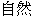
"nature",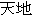
"heaven and earth" ), Sino-Korean words coined in Korea (e.g.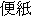
"letter",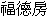
"real estate agency" ) and Sino-Korean words from Japan (e.g. "flight",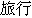
"travel" ). From the end of 19th century (Meiji period), Chinese-style words made in Japan began to be introduced to Korea such as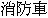
"fire engine",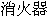
"fire extinguisher", "air plane", "journey", etc., which are made obviously due to the influence of western culture. Since then, the majority of technical terms have been coined in Japan and then introduced to Korea as well as back to China. In the 19th century 10% of Sino-Korean words came from Japanese (Chang, 2000). Now, according to Lee (1984), (38%) of a sample including 2,635 words which use the same Chinese characters are made in Japan. This shows that the number or the Japanese-made words has been increasing.
| Type | Number | percentage |
| Sino Korean | 116 | 58.0% |
| Korean Native | 64 | 32.0% |
| Other Foreign | 15 | 7.5% |
| Mixed | 5 | 2.5% |
| Total | 200 | 100.0% |
| Type | No. | % | % of Total |
| Exact Match | 76 | 65.5% | 38.0% |
| Equivalent | 19 | 16.4% | 9.5% |
| No Match | 21 | 18.1% | 10.5% |
| Sub-Total | 116 | 100.0% | 58.0% |
| Total | 200 | -- | 100% |
In Japanese, there are three kinds or writing. One is the classic kanji, i.e. Chinese characters, and the other two are phonetic scripts called hiragana and katakana. Hiragana is mainly used for inflectional endings and functional words, katakana is used for foreign words. Some Sino-Japanese like "camera", "elevator", etc. are not used anymore. These words are replaced with Katakana words such as
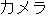
"camera",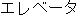
"elevator", and many other loan words, mainly from English.Backhouse (1993, pp 74-76) estimates that 54% of Japanese vocabulary is Sino-Japanese, 6% of western origin and the remaining 40% native.
Encoding of Chinese Characters
Japanese and Korean both have more than one way of encoding Chinese characters on a computer (Lunde, 1999). This means that even though two characters may appear the same, such as Korean
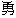
and Japanese , they will not have the same binary representation. However, when the Unicode encoding was designed, equivalent characters from different national character sets were mapped to the same character encodings, a process known as Han Unification (Lunde, 1999, pp 120-128). Therefore, in Unicode, Korean and Japanese are exactly the same. Characters where the meaning is different, or old and new variations exist in a national encoding, are not unifled in Unicode. For example (normally used in Korean) and normally used in Japanese (which, however, also encodes ) are not unified.Tanaka and Umemura (1994) extended a Japanese-French dictionary using English as an intermediate language. They used a method of "inverse consultation". First, they look up English translations for a Japanese word, and then French translations or these English translations. Then, for each French word, they look up all of its English translations. They then count how many English translations match. This is called "one time inverse consultation". This was extended to "two time inverse consultation" : that is, they look up all the Japanese translations of all the English translations of a given French word and see how many times the Japanese word appears. They prove that their method was useful for revising and supplementing the vocabulary of existing dictionaries.
Shirai and Yamamoto (2001) used a Korean-English and a Japanese-English dictionary to build a Korean-Japanese dictionary using English as a pivot. Their method is a refinement of Tanaka and Umemura (1994). First, they extract some sets of English words corresponding to Korean words from a Korean-to-English dictionary. Second, they search for Japanese words having English equivalents that are similar to Korean counterparts in meaning. Finally, we link the Korean words to Japanese ones. They tested 1,000 Korean words extracted at random and get 365 appropriate Japanese words. The result shows that 72% are accurate for the matched Japanese words for a degree of similarity of 0.8 and above. However, in spite of their high accuracy, their method needs to improve the recall or translation pairs.
Bond et al. (2001) show how semantic classes can be used along with a pivot language to create a Japanese-to-Malay dictionary. In addition to using English to link pairs, they use semantic classes to rank translation equivalents so that word pairs with compatible semantic classes are chosen automatically.
A simplifIed example is given below: The Semantic class of anjing laut matches with azarashi "seal", so it is ranked first. This makes it possible to eliminate bad equivalence candidate and to make a one-to-one matching dictionary. Bond et al. (2001) also match through Chinese, and show that using two pivot languages is effective in distinguishing between homonyms.
|
Japanese | azarashi | | |
| English | seal | |||
| Sem Classes | <animal> |
|
Malay | anjing laut | | |
| English | seal | |||
| Sem Classes | <animal> | |||
|
Malay | tera | | |
| English | seal | |||
| Sem Classes | <stationary> |
|
Japanese | azarashi | | |
| Malay | anjing laut | |||
| English | seal | |||
| Sem Classes | <animal> |
There may be many other alternatives to improve the previous methods. We may want to use English linguistic information fully, which will not affect the generality of the proposed method in the sense of building up a dictionary automatically and any pair of languages. Or, we can use the ideal combination of method using the information of specific language pairs. Wo can think of two step selection: the first step is to look up Korean-to-English dictionary and then, to consequently look up the Japanese words for the English search results obtained from the first output. In addition to this, we want to use Chinese characters for enhancing the generation Korean-Japanese dictionary. This method is similar to (Bond et al., 2001) in the sense of using Chinese as a second pivot. In addition, we will use the synonyms of Wordnet (WordNet, 1997) to get more matches.
Finally, this research was made possible by the existence or a number of open source resources. The results of this research will, of course, be made open, and we have filed bug reports and updates with many of the resources we use. In doing so, we produce better resources for everyone to use, so that the tedious process or compiling lexicons does not have to be repeated over and over again. We hope and expect that this will become standard, so that each generation of researchers can build not only on the ideas of their predecessors, but also on the knowledge that they have compiled.
Due to the some variations among the three languages, we need several pre-editing processes so that equivalent variations can still be matched to get the right candidates. After introducing the lexical resources, we will explain the method we use in detail. In the next section, we show the results.
In this paper, we use five resources:
| 1. | engdic an English-to-Korean dictionary made available through the Debian Project <www.debian.or.kr> | |
| 2. | the Hangul/Hanja dictionaries from the freewnn-kserver and AMI front end processors <www.freewnn.org> | |
| 3. | edict a Japanese-to-EngIish dictionary and available for personal use from <www.csse.monash.edu.au/~jwb/wwwjdic.html> | |
| 4. | a list or old/new kanji equivalents, compiled by Kazuo Koike and available from <www.l-h.co.jp/lhcontents/l-hlib/koike_pointer.html> | |
| 5. | mule-ucs, an Emacs extension to do Unicode conversion | |
| 6. | wordnet, an English net of words, available from Princeton |
Engdic is a large English-to-Korean dictionary of some 210,000 word pairs. It contains only Hangul and English, and is not consistently formatted. The original format is (roughly) : English word; part of speech (sometimes omitted, sometimes multiple); Korean translation equivalent(s).
The freewnn-kserver has lists of single Hanja/Hangul (4,900) as well as Hanja words and their Hangul equivalents (32,000).
Edict, developed by Jim Breen, is a comprehensive Japanese-English electronic dictionaries capable of use within a variety of search-and-display, electronic-text reading support, and machine translation environments (Breen, 1995). His project has been still under way since early 1991 and is now being extended to other languages, notably German and French. It currentIy has around 170,000 Japanese-English pairs, excluding proper nouns. The format is (roughly) : Japanese word; Kanji (if any); part of speech (sometimes omitted, sometimes multiple); English equivalents.
We also used a list of modern Japanese Kanji and their older equivalents, with just under 700 pairs, put on the web by Kazuo Koike.
Finally we used the Unicode extension to Mule (Mule-UCS) and WordNet.
Since we are using all on-line resources, we strongIy feel the importance or providing feedback to the resources we have used. We intend to add the Japanese-Korean pairs we produce to edict, and release an improved version of engdic. We have already made some additions to the freewnn-kserver Hanja/Hangul dictionaries. It is very important to share resources to develop improved systems.
We attempted to use commercial dictionaries for our experiments, as many now come with CD-ROMs. However, the Korean-English dictionary we bought could only be accessed on a Korean Windows operating system, and most Japanese dictionaries are only available for Japanese operating systems, making this kind of research very difficult. Just to display the data is not a simple matter. The portability of on-line open source dictionaries is making possible research that could not be done in the past.
We used a perI script to convert engdic to triplets of Korean; POS; English. We then used the freewnn-kserver word dictionary to add hanja candidates to the Korean words. This gave us possible hanja for around 45% or the words. We then did some simple morphologicaI analysis (such as stripping inflections from nominal verbs and adjectives) to add hanja to another 5%.
This gave us a dictionary with entries such as the following:
| Korean | Pos | English | Hanja Candidates | |||
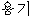 yongi |
n | container | 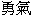 , ,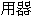 | |||
| yongi | n | courage | , , |
We then mapped the Korean-English pairs to Japanese, by looking up edict as an English-Japanese dictionary. This gave an enormous number of equivalence candidates. There were 9 English-Japanese pairs for comtainer, and 12 for courage.
Our next step was to compare the Korean Hanja with the Japanese Kanji. When matching characters, we first try to match the Unicode representations. This allows us to successfulIy link Korean yongi "container" with Japanese youki "container". When we could not find an exact match, we try to match the modern equivalents of older characters using the table given by Koike. This allows us to match Korean "courage" with Japanese
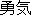
yuuki "courage", where is a new variant of .
| Korean | English | Hanzi | Japanese | ||||
| yongi | container | 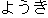 youki | |||||
| yongi | courage | / | yuuki |
As a side effect of this matching, Korean words with more than one potential Hanja equivalent are disambiguated according to their English reading. We can thus produce a Korean-English dictionary with Hanja as a by-product or our research.
A total of 27,979 Hangul index words matched through English to Japanese. Of these, 3,664 also matched using hanzi, 12.3%.
These results are shown under "plain match" in Table 3. About one in four of these matches used the old-new character equivalence table.
| Plain Match | With Wordnet | |
| Hangul index words | 27,979 | 30,713 |
| Matching Entries | 3,664 | 3,822 |
The upper limit of matching predicted by our pilot study was 48%. We were well below this limt. The main reason is that we were able to match fewer Hanja to our lexicon than we should expect: 36% rather than 60%. This is because the freewnn-kserver Hangul/Hanja lexicon is not very complete, Korean use of Hanja is declining, so there is not a lot of interest in HanguI/Hanja conversions.
Another reason is that the choice of English translations in engdic and edict are somewhat arbitrary. One lexicon may have "scorn" and one "disdain" for two words that are basically equivalent in meaning, and share the same Chinese characters.
We also did a little normalization or the English, mainly stripping the final "s" off nouns, to give the singular form. In this way we could match the Korean entry hanja "Chinese character" with the Japanese entry kanji "Chinese characters".
Finally, Koike's old-new equivalence table only included characters from the Japanese encoding JIS X 0208:1997. To this we therefore added some equivalences with Korean characters not found in this encoding, such as Korean
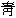
, the equivalent of Japanese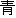
.We began to overcome the second problem by using the wordnet English thesaurus to widen the matching in our English pivot. This will, of course, give us many more spurious equivalence candidates, but we can rely on the second hanzi pivot to thin these out. We widen our net by looking up Wordnet's synonyms fOr all the Korean entries that had Hanja, and try to match all of them.
By doing this, and using the extended new-old equivalences, we matched 3,822 Hanja-Kanji pairs. Again, roughIy 1 in 4 matches was made using the old-new equivalence table. There were 2.4 times as many equivalence candidates (575,243), most of which are spurious. Note that the number of matches through English also increased, so the percentage of matches only increased slightly 12.4%. However, in absolute terms, we increased the number of matches by 157 from 3,664, an increase of over 4%.
The precision of matching with two pivots is 100%, all the entries that matched through both sources are good translations.
In order to test the absolute usefulness of our method, we did a further evaluation. This time, we took 200 words from a Korean-Japanese lexicon, and tested (a) whether we matched them in our experiment and (b) if not, why we failed. As only Sino-Korean words can match, we only consider the Sino-Korean entries 104 out of the 200. Of these 104 entries, 69 (66%) were not found in our Korean-English Dictionary, and thus could not be evalnated. We thus looked at the remaining 35 entries. We expect a maximum result of around 80% (as per Table 2). The resuIts can be found in Table 4
| Type | No. | % |
| Match | 12 | 34% |
| No Hanja | 5 | 14% |
| No Japanese | 2 | 6% |
| Eng. mismatch | 11 | 31% |
| POS mismatch | 1 | 3% |
| New 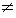 Old | 4 | 11% |
| Total | 35 | 100% |
That so few words were found in the Korean dictionary engdic is a reflection of two things. The first is that it is originally an English-Korean dictionary. Therefore, Korean concepts, which are one word in Korean but may be a phrase in English, are not found: for example
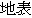
ji'pyo "surface of the earth". This is found in edict, but not in engdic. Also, many of the Korean entries are explanations, rather than translation equivalents, and these, of course, do not match. The second is that is a relatively new open source resource, with no active maintainer. The edict project has grown from a few thousand word pairs to over 170,000 in ten years, let us hope that engdic will grow in the same way.As we mentioned earlier, Hanja are falling out of use in Korea, so the Hanja/Hangul dictionary is also very incomplete. This was the cause of 14% of our failures.
Even using Wordnet, the English mismatches are the largest source of errors. Some mismatches were caused by spelling errors (magnificance for magnificence in edict), some by the addition of parenthesized elements in the English gloss, and some by genuine mismatches produce did not match fruit, even with our thesaurus. We should note that we found during our evaluation that we were not using all the synonyms in Wordnet. Fixing our program to use these should match another 3 entries, an increase of almost 9%.
Use of a derivational dictionary, would match the POS mismatch. It may also introduce some spurious matches.
FinalIy, our old-new mapping table is still incomplete. As we extend our evaluation, we expect to find more equivalents. Each new equivalent adds around 5 to 10 new matches. We have put our latest version on the web at: www.kecl.ntt.co.jp/icl/mtg/ members/bond/lists/ko-ja-hanzi.html, and encourage anyone to use it and add to it.
Almost all of the errors are due to deficiencies in the lexical resources. We address some ways of improving them in the following section.
Further Work
We find that having a broad coverage of words in our resources is the key to reusing them. We therefore plan to collect and combine more dictionaries which already exist and are open to the public. For the Korean dictionaries, we hope to use the Korean dictionary now being created by the 21st Century Sejong Project in Korea (Kim and Cho, 2001). This will have Hanja, Hangul and source words of foreign-origin words.
For the Japanese dictionaries we will use the additional engdic Iexicons available in the engdic project, with computational, life science, linguIstic and other words (compdic, lifscdic, lingdic ... ). These increase the number or word pairs to over 400,000.
An obvious drawback of our method is that it does not match foreign or native words. To match foreign words, we propose the use of automatic transliteration to find the source word and then match using it as a second pivot. For example ppang "bread" and pan "bread" both come from the Portuguese word for bread pan. They would match both through English "bread" and the transliteration "pan". Native words must be matched by other methods, such as those of Shirai and Yamamoto (2001) and Shirai et al. (2001).
Finally, we will continue to provide feedback to the maintainers of all the resources we use. In addition we will put our Korean-Japanese entries into the new multilingual JMDICT project (Jim Breen's multilingual extension of edict).
In this paper, we present an method of generating part of a Korean-Japanese dictionary fully automatically. We use both English and Chinese characters to match, which gives a match rate of around 12%, with a 100% precision. The theoretical maximum is 48%. Our present research is based on the simple fact that both Korean and Japanese use Chinese characters, not on any more information. The demand of generating dictionaries for more novel pairs of languages is growing and we should be able to use many other types of clues such as word similarity, characteristics of language combination, and so on in addition to using English. We were also able to show that the use of an English thesaurus in the matching process, led to gains of over 4%.
This research was carried out using open source resources, and would not have been possible without them. The results are being released as open source. As open-source resources are constantly improving, we hope to be able to rerun our matching algorithm in the future, with improved inputs, and produce further improvements in our output.
We would like to thank the compilers and maintainers of all of the resources we used, as well as Takehiko Maruyama and Mitsuo Shimohata of ATR for their helpful discussions.